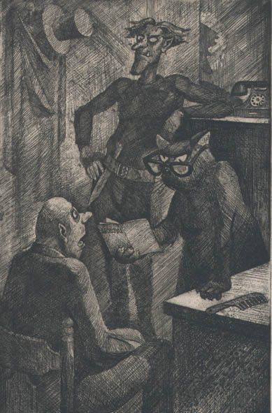

Неудачливые визитеры
Дядя Берлиоза Максимилиан Андреевич Поплавский и буфетчик Соков в квартире № 50
Краткое содержание главы
Из Киева в Москву на спешную телеграмму прибыл расчетливый дядя покойного Берлиоза — экономист Поплавский, уже мечтавший перебраться на столичную жилплощадь племянника. Но в квартире № 50 его встретил кот Бегемот с паспортом в лапах, вежливо проверил документы и выдворил изумленного киевлянина вниз по лестнице ударом тяжелого чемодана.
Следом за ним в «нехорошую квартиру» явился буфетчик Варьете Андрей Фокич Соков, чтобы пожаловаться на поддельные червонцы и заодно поговорить об осетрине «второй свежести». Воланд с ледяной усмешкой объяснил буфетчику, что свежесть бывает только одна — первая, она же и последняя, а заодно предсказал несчастному скорую гибель от рака печени в клинике Первого МГУ.
